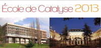

Catalysis Training Course 2013¶
{kind=link}
Lyon & Villeurbanne
August 28-31 2013
Website of the Training course
Program
Scientific Committee:
Tivadar CSERI – IFPEn
Anne GIROIR-FENDLER – IRCELYON UCBL1
Michel LACROIX – IRCELYON CNRS
Leonarda LIOTTA – ISMN CNR (Italy)
Carine MICHEL – ENS Lyon
Catherine PINEL – IRCELYON CNRS
Alessandra QUADRELLI – CPE CNRS
Jose Luis VALVERDE – UCLM (Spain)
Philippe VERNOUX – IRCELYON CNRS
Organising Committee:
Tivadar CSERI – IFPEn
Anne GIROIR-FENDLER – IRCELYON UCBL1
Liliane GOMMET – DR7 CNRS
**Michel LACROI**X – IRCELYON CNRS
**Carine MICHE**L – ENS Lyon
Solange PERREL – UCBL1 Congress Department
Audrey PHILIPPE-SABOUL – IRCELYON
Alessandra QUADRELLI – CPE CNRS
The workshop is supported by:
Université Claude Bernard
École normale supérieure de Lyon
CNRS
CPE Lyon
IFP Énergies nouvelles
IRCE Lyon
Institut de Chimie de Lyon
Université de Lyon
ARC Énergies
Centre Blaise Pascal
Aims¶
The search for new reactions that are economical in terms of atoms, steps required, energy used and waste produced, and that are also more efficient and more selective, while involving safer reagents, is a major thrust for today’s chemistry laboratories. Catalysis plays an essential role in the orientation of these new chemical reactions and leads to many new developments. For these reasons, catalysis training sessions of the highest possible calibre are of fundamental importance. During the week prior to the Europacat 2013 Congress organised in Lyon, France, we are hosting a catalysis training course on the Doua scientific campus, in nearby Villeurbanne, aimed at young researchers who are beginning their career in the domain of catalysis.
Catalysis is a recent science that has undergone great developments since the 1950s, with many tools that have been invented since that time to better understand the mechanisms that govern catalytic reactions. This catalysis school will present these developments and new methodologies that make it possible to carry out high quality research in catalysis.
Even though catalysis as a subject is taught in a general way within various Master’s programs in France and abroad, it is important that new researchers in catalysis benefit from a training program that is completely focused on this discipline. Only the highest level researchers in catalysis are in a position to provide such specialised training.
Lyon is the only city in France that possesses a centre of excellence for catalysis. This Lyon centre is internationally recognised, with research teams in all domains of catalysis that can provide top quality teaching enriched with practical examples based on their current research.
Our educational team, which is based principally in Lyon, comprises internationally recognised researchers and lecturer-researchers in catalysis who will offer course content addressing all of the most recent developments in their respective sub-disciplines.
Anne GIROIR-FENDLER
//Chairwoman of the Organising Comittee//